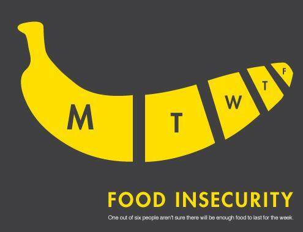
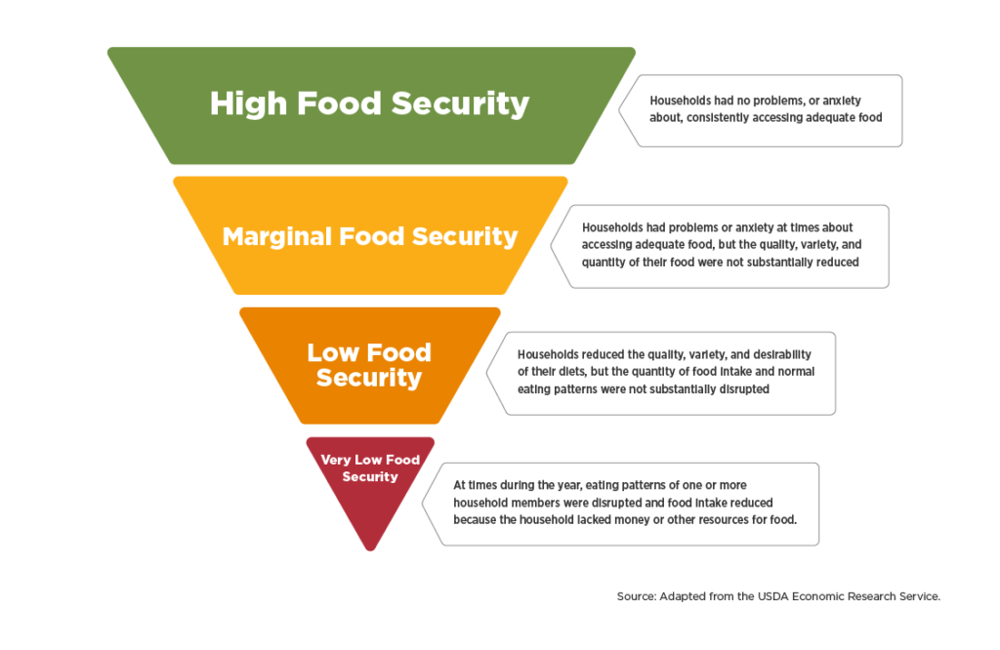

Public Health Crisis: Food Insecurity

"One out of six people aren't sure there will be enough food to last for the week." - PA Times
There is no single face, age, or region of food insecurity, as it impacts every community in the United States.
Food insecurity is a complex issue. This nationwide problem is exacerbated by poverty, accessibility issues, and a dearth of government assistance.
With the current pandemic and rising unemployment rate, the food insecurity crisis is only expected to get worse.
Using data from the USDA Food Environment Atlas, we analyzed the impact of various food insecurity factors, such as low access
to stores, fast food restaurant availability, and food assistance programs, both nationwide and in Illinois.
Image at left source: PA Times
To set a baseline, the USDA defines the ranges of food security and insecurity as:
• High food security: no reported indications of food-access problems or limitations.
• Marginal food security: one or two reported indications—typically of anxiety over food sufficiency or shortage of food in the house. Little or no indication of changes in diets or food intake.
• Low food security: reports of reduced quality, variety, or desirability of diet. Little or no indication of reduced food intake.
• Very low food security: reports of multiple indications of disrupted eating patterns and reduced food intake.
